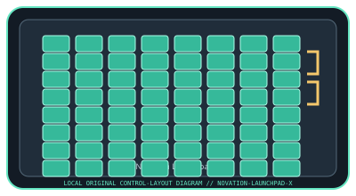

[ SPECIALIZED INPUT CONTROLLERS // IDENTIFIED COMPONENT ]
Novation Launchpad X
USB grid controller with pressure-sensitive RGB pads for clip launching, note entry, and MIDI control.

MODEL IDENTIFICATION: Launchpad X (model code: LAUNCHPAD-X). Confirm the full label, revision, region, included accessories, and software generation against the physical unit before use.
Model specifications
| Catalog leaf | Specialized input controllers |
|---|---|
| Exact model / identifier | Launchpad X (model code: LAUNCHPAD-X) |
| Control inputs / sensors | 64 velocity- and pressure-sensitive RGB pads arranged 8 × 8; top-row mode and navigation buttons. Pad pressure is a continuous performance input, not a calibrated force gauge. |
| Connection / protocol | USB-C device connection; bus-powered USB MIDI device. USB MIDI messages and the supported Ableton Live control-surface integration carry pad/control events; no audio is transmitted. |
| Driver, software, and host compatibility | Novation Components for firmware, custom modes, and settings; Ableton Live integration is supported. Other DAWs can receive MIDI, with mapping and OS support dependent on the host and current Components/driver package. Confirm supported OS and USB port requirements in current Novation downloads. |
| Setup / calibration | Connect directly to a data-capable USB port, install/update firmware only through Novation Components, then select the Launchpad X control surface or MIDI port in the host. Test pad velocity/pressure response and select an appropriate velocity curve in settings; there is no user force-sensor calibration procedure. |
Safety and preservation
Keep liquids and metal debris away from the pads and USB-C port. Do not press or pry the pad surface with tools; disconnect before cleaning and use a dry, soft cloth. Avoid cable strain and stop using a damaged USB cable.
Record observed condition, host OS, application/driver version, firmware, accessories, and test conditions separately from manufacturer claims.
Primary manufacturer sources
- Novation Launchpad X product specificationsManufacturer product specifications and feature description.
- Novation Launchpad X support and downloadsManufacturer support section for setup, user guide, firmware, and compatibility updates.
Specifications and software support can change by revision and host OS. Verify the exact unit and applicable manual before service or deployment.